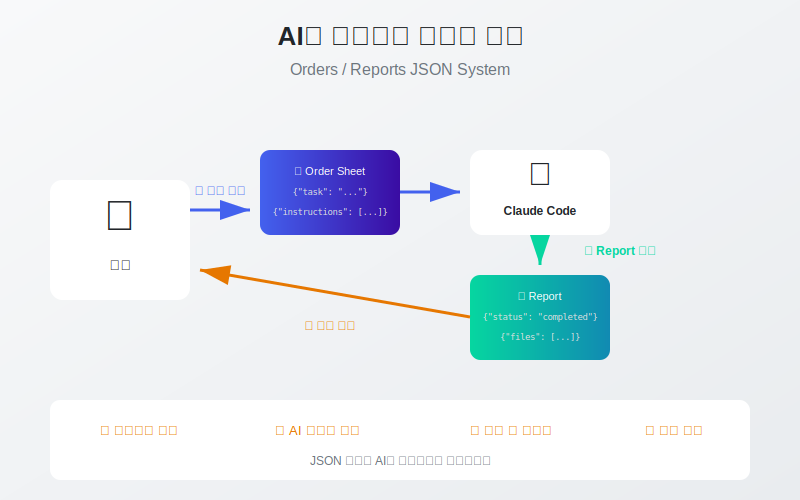

이 가이드는 SSALWorks 플랫폼에서 Claude Code와 효율적으로 협업하기 위한 Orders/Reports JSON 시스템을 설명합니다. 이 시스템을 통해 작업 요청과 결과를 구조화된 형식으로 관리하고, AI가 세션을 넘어 기억을 유지할 수 있습니다.
사람과 Claude Code 사이의 구조화된 통신 브릿지입니다.

흐름 요약: 1. ① 작업 요청: 사람이 Order Sheet(JSON)를 작성하여 Claude Code에게 전달 2. ② Report 생성: Claude Code가 작업 완료 후 Report(JSON)를 생성 3. ③ 결과 확인: 사람이 Report를 확인하여 작업 결과 검토
Human_ClaudeCode_Bridge/
├── Orders/ # 작업 요청서 저장
│ ├── ORDER-GE-251213-01.json # Order Sheet
│ └── ORDER-GE-251215-02.json
├── Reports/ # 작업 결과 저장
│ ├── REPORT-GE-251213-01.json # 작업 완료 보고서
│ └── REPORT-GE-251215-02.json
└── HUMAN_CLAUDECODE_BRIDGE_GUIDE.md # 상세 가이드
| 특징 | MD 파일 | JSON 파일 |
|---|---|---|
| 구조화 | 자유 형식 | 필드별 정확한 구조 |
| AI 파싱 | 해석 필요 | 즉시 이해 가능 |
| 검색 | 텍스트 검색만 | 필드별 쿼리 가능 |
| 자동화 | 어려움 | 스크립트 연동 쉬움 |
| 세션 간 기억 | 제한적 | 완전한 기억 유지 |
핵심 이점: JSON은 AI의 "외부 메모리" 역할을 합니다.
사람이 Claude Code에게 보내는 작업 요청서입니다. 무엇을, 어떻게, 왜 해야 하는지 구조화된 형식으로 전달합니다.
{
"order_id": "ORDER-GE-251213-01",
"created_at": "2025-12-13T14:30:00+09:00",
"requester": "Human",
"task_id": "S2BA1",
"task_name": "회원가입 API 구현",
"priority": "high",
"instructions": [
"이메일/비밀번호 검증 로직 구현",
"Supabase Auth 연동",
"에러 핸들링 추가"
],
"expected_files": [
"Production/Backend_APIs/auth/signup.ts",
"S2_개발-1차/Backend_APIs/S2BA1_signup.ts"
],
"deadline": "2025-12-14",
"notes": "Google OAuth는 별도 Task에서 처리"
}
| 필드 | 타입 | 필수 | 설명 |
|---|---|---|---|
order_id |
string | 필수 | 고유 식별자 (ORDER-[용도]-[날짜]-[번호]) |
created_at |
string | 필수 | ISO 8601 형식 생성 시간 |
requester |
string | 필수 | 요청자 (보통 "Human") |
task_id |
string | 권장 | SAL Grid Task ID |
task_name |
string | 필수 | 작업명 |
priority |
string | 권장 | high/medium/low |
instructions |
array | 필수 | 구체적인 지시사항 목록 |
expected_files |
array | 권장 | 예상 결과물 파일 경로 |
deadline |
string | 선택 | 마감일 (시간 추정 아님) |
notes |
string | 선택 | 참고사항 |
ORDER-[용도코드]-[날짜6자리]-[순번2자리]
용도코드:
- GE: General (일반)
- FE: Frontend
- BE: Backend
- DB: Database
- BF: Bug Fix
- RV: Review
예시:
- ORDER-GE-251213-01 (일반 작업 #1)
- ORDER-FE-251215-03 (프론트엔드 작업 #3)
- ORDER-BF-251220-02 (버그 수정 #2)
1. 구체적인 instructions 작성:
// 나쁜 예
"instructions": ["로그인 기능 만들어줘"]
// 좋은 예
"instructions": [
"이메일/비밀번호 입력 폼 생성",
"Supabase Auth signInWithPassword 사용",
"로그인 성공 시 /dashboard로 리다이렉트",
"실패 시 에러 메시지 표시"
]
2. expected_files로 결과물 명시:
"expected_files": [
"Production/Frontend/pages/auth/login.html",
"Production/Frontend/css/auth.css",
"S2_개발-1차/Frontend/S2F1_login.html"
]
Claude Code가 작업 완료 후 생성하는 결과 보고서입니다. 무엇을 했는지, 어떤 파일이 생성되었는지, 검증 결과는 어떤지 기록합니다.
{
"report_id": "REPORT-GE-251213-01",
"order_id": "ORDER-GE-251213-01",
"completed_at": "2025-12-13T16:45:00+09:00",
"executor": "Claude Code",
"task_id": "S2BA1",
"task_name": "회원가입 API 구현",
"status": "completed",
"summary": "회원가입 API 구현 완료. 이메일/비밀번호 검증 및 Supabase Auth 연동 완료.",
"files_created": [
{
"path": "Production/Backend_APIs/auth/signup.ts",
"description": "회원가입 API 메인 로직",
"lines": 145
},
{
"path": "S2_개발-1차/Backend_APIs/S2BA1_signup.ts",
"description": "개발 폴더 복사본",
"lines": 145
}
],
"verification": {
"unit_test": "24/24 passed",
"build": "success",
"lint": "0 errors, 2 warnings"
},
"notes": "Google OAuth는 S2BA3에서 처리 예정",
"next_steps": [
"S2BA2: 로그인 API 구현",
"S2T1: 통합 테스트 작성"
]
}
| 필드 | 설명 |
|---|---|
report_id |
리포트 고유 ID |
order_id |
원본 Order Sheet ID (연결고리) |
status |
completed / partial / blocked |
summary |
작업 결과 한줄 요약 |
files_created |
생성/수정된 파일 목록 |
verification |
테스트/빌드/린트 결과 |
next_steps |
다음 작업 제안 |
| Status | 의미 | 대응 |
|---|---|---|
completed |
모든 작업 완료 | 다음 작업 진행 |
partial |
일부만 완료 | 미완료 항목 확인 |
blocked |
진행 불가 | 블로커 해결 필요 |
Claude Code는 세션이 바뀌면 기본적으로 이전 대화를 기억하지 못합니다. 하지만 JSON 파일은 영구 저장되므로, 다음 세션에서도 참조할 수 있습니다.
세션 1 → Report JSON 저장
↓
세션 종료
↓
세션 2 시작
↓
Report JSON 읽기 → "아, 이전에 여기까지 했구나!"
패턴 1: 이전 작업 확인
"Reports 폴더에서 S2BA1 관련 Report 찾아서
이전에 뭘 했는지 알려줘"
패턴 2: 연속 작업
"REPORT-GE-251213-01.json 읽고
next_steps에 있는 작업 시작해줘"
패턴 3: 전체 진행상황 파악
"Reports 폴더의 모든 JSON 읽고
완료된 Task 목록 정리해줘"
// Report에 이전 Order 연결
{
"report_id": "REPORT-GE-251214-02",
"order_id": "ORDER-GE-251214-02",
"related_reports": [
"REPORT-GE-251213-01", // 선행 작업
"REPORT-GE-251213-02"
]
}
이렇게 연결하면 AI가 작업 히스토리를 따라갈 수 있습니다.
1. Order Sheet 작성 (사람)
Human_ClaudeCode_Bridge/Orders/ORDER-GE-251213-01.json
2. Claude Code에게 전달
"Order Sheet 보냈으니 확인하고 작업해줘"
3. Claude Code 작업 수행
- Order 읽기
- 작업 실행
- 검증 수행
4. Report 생성 (Claude Code)
Human_ClaudeCode_Bridge/Reports/REPORT-GE-251213-01.json
5. 결과 확인 (사람)
Report 읽고 검토
예시 1: API 개발 요청
{
"order_id": "ORDER-BE-251213-01",
"created_at": "2025-12-13T09:00:00+09:00",
"requester": "Human",
"task_id": "S2BA1",
"task_name": "회원가입 API",
"priority": "high",
"instructions": [
"POST /api/auth/signup 엔드포인트 생성",
"요청 body: { email, password, name }",
"비밀번호: 8자 이상, 영문+숫자+특수문자",
"Supabase Auth createUser 사용",
"성공: 201, 실패: 400/409"
],
"expected_files": [
"Production/Backend_APIs/auth/signup.ts"
]
}
예시 2: UI 개발 요청
{
"order_id": "ORDER-FE-251214-01",
"created_at": "2025-12-14T10:00:00+09:00",
"requester": "Human",
"task_id": "S2F2",
"task_name": "회원가입 페이지 UI",
"priority": "medium",
"instructions": [
"이메일/비밀번호/이름 입력 폼",
"실시간 유효성 검사 표시",
"이용약관 동의 체크박스",
"반응형 디자인 (모바일 우선)",
"기존 auth.css 스타일 활용"
],
"expected_files": [
"Production/Frontend/pages/auth/signup.html"
],
"dependencies": ["S2BA1 완료 필요"]
}
예시 3: 버그 수정 요청
{
"order_id": "ORDER-BF-251215-01",
"created_at": "2025-12-15T11:00:00+09:00",
"requester": "Human",
"task_id": null,
"task_name": "로그인 세션 버그 수정",
"priority": "high",
"instructions": [
"증상: 로그인 후 새로고침하면 로그아웃됨",
"원인 파악 후 수정",
"Supabase Auth 세션 관리 확인",
"테스트 케이스 추가"
],
"expected_files": [
"Production/Frontend/js/auth.js"
],
"notes": "긴급 - 사용자 불편 발생 중"
}
작업 확인하기:
"REPORT-BE-251213-01.json 읽고 요약해줘"
다음 작업 이어가기:
"최근 Report의 next_steps 확인하고
다음 작업 시작해줘"
작업 히스토리 조회:
"이번 주 완료된 Report들 모아서
진행상황 정리해줘"
해야 할 것: - 구체적인 지시사항 작성 - expected_files 명시 - 의존성(dependencies) 표시 - 우선순위 설정
하지 말아야 할 것: - 시간 추정 포함 (AI가 시간 추정 못함) - 모호한 지시 ("적당히 해줘") - 너무 많은 작업 한번에 요청
해야 할 것: - 작업 후 Report 생성 요청 - filescreated 확인 - verification 결과 검토 - nextsteps 활용
하지 말아야 할 것: - Report 없이 다음 작업 진행 - 오래된 Report만 참조 - 검증 결과 무시
파일명 규칙:
Orders/ : ORDER-[용도]-[날짜6자리]-[번호].json
Reports/ : REPORT-[용도]-[날짜6자리]-[번호].json
정기 정리: - 완료된 작업은 Archive 폴더로 이동 (선택) - 30일 이상 지난 파일 정리 검토
문제: Claude Code가 Order를 못 찾을 때
해결: "Human_ClaudeCode_Bridge/Orders/ 폴더 확인해서
가장 최근 Order 찾아줘"
문제: 이전 작업 기억 못할 때
해결: "Reports 폴더에서 [Task ID] 관련 Report 찾아서
context 파악해줘"
문제: Report가 생성 안 됐을 때
해결: "방금 완료한 작업 Report JSON으로 만들어서
Reports 폴더에 저장해줘"
Order Sheet 작성 전: - [ ] taskid 확인 (SAL Grid 참조) - [ ] instructions 구체적으로 작성 - [ ] expectedfiles 명시 - [ ] 의존성 확인
Report 수령 후: - [ ] status 확인 (completed/partial/blocked) - [ ] filescreated 확인 - [ ] verification 결과 검토 - [ ] nextsteps 확인
이 시스템을 활용하면 Claude Code와의 협업이 체계적이고 효율적으로 변합니다. 세션이 끊어져도 작업 연속성을 유지할 수 있습니다.